Psychopharmacology: how do drugs work on the brain?
Learning Objectives
- To gain knowledge and understanding of how drugs enter the body and the time course of their effects
- To gain a basic understanding of how general classes of drugs interact with neurons to alter their function.
Having learnt about how neurons in the brain communicate, let’s now consider how drugs can affect their function.
In a fictional example, Sam has both high cholesterol and attention deficit hyperactivity disorder (ADHD). To help alleviate their symptoms, the GP prescribes them atorvastatin to lower their cholesterol, while a psychiatrist prescribes lisdexamfetamine to help improve their attention.
Both atorvastatin and lisdexamfetamine are considered drugs. Researchers who design drugs and investigate how they act on the body are often called pharmacologists (they study pharmacology). While a general pharmacologist might explore the use of atorvastatin or lisdexamfetamine, someone who researches psychopharmacology might be more interested in understanding how lisdexamfetamine can reduce symptoms of ADHD.
These scientists don’t just develop drugs or observe changes in symptoms after administration; they also ask various other questions! For example, a psychopharmacologist may consider the following:
- What parts of the brain does a drug act on?
- Does a drug have its effect because it interacts with a specific receptor type?
- How does the long-term administration of a drug impact brain biology?
- After a drug is taken, how long do its effects last?
- Can a drug’s chemical structure be changed so that its effects can be prolonged?
- Would taking medicine in a certain way (e.g., oral vs nasal) improve the drug’s ability to act on the brain?
- Could brain biology explain why there is individual variation in the capacity of drugs to ameliorate certain conditions?
Building on your knowledge of neurobiology, this chapter will explore the concepts needed to understand how a psychopharmacologist might approach addressing these questions.
Classifying drugs
Before exploring how drugs act on the body and brain, we need to clarify how we refer to different drugs; it can be confusing because certain compounds can go by different names. For example, a psychopharmacologist may describe methylphenidate as a psychostimulant (or a phenethylamine), a norepinephrine–dopamine reuptake inhibitor. In contrast, a chemist might refer to the drug by its chemical structure: C14H19NO2. Furthermore, methylphenidate might be prescribed by a psychiatrist as ‘Ritalin’ and referred to by the UK government (2022) as a ‘Class B controlled substance’ (which has severe penalties for illegal possession and intent to supply). While the following is likely not an exhaustive list of methods to categorise drugs, they can broadly be referred to in the following ways:
- Source
- Chemical structure
- Relative mechanism of action in the brain
- Therapeutic use or effect
- Marketed names
- Legal or social status
We will now focus on three of these categories that you are likely to encounter in your studies of biopsychology.
Classification by source
Drugs come from various places – some are naturally occurring, while others are created in the laboratory. Cocaine (C17H21NO4) is an example of a naturally occurring drug because it is directly extracted from the leaves of the coca plant. Opium is also naturally occurring, taken from the unripe seed pods of the opium poppy. In other words, all the molecules that give cocaine and opium their psychoactive properties are already present in the plant itself.
Semisynthetic drugs are chemically derived from naturally occurring substances. An example of a semisynthetic drug is heroin (a modified molecule of morphine, the main active ingredient of opium). The drug lysergic acid diethylamide (LSD) is also semisynthetic, originally derived from the grain ergot fungus.
Finally, some drugs are entirely synthetic, made from start to finish in the laboratory. Methadone, amphetamine, and 3,4-methylenedioxymethamphetamine (MDMA or ecstasy) are all examples of synthetic psychoactive substances.
Relative mechanism of action in the brain
We will discuss the details of how drugs might act in the brain in the pharmacodynamics section (Section 4). For now, it’s essential to understand that certain drugs can have very similar molecular targets in the brain.
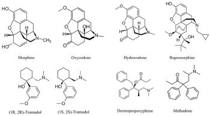
For example, opium (natural), heroin (semisynthetic), and methadone (synthetic) all act on opioid receptors in the brain. Therefore, these opioid-targeting drugs might be considered ‘variations on a theme’. Despite their overall affinity for binding to opioid receptors, it’s important to remember that the biological and psychological effects may still differ. There are different types of opioid receptors (and these might be differentially located across the brain), and certain opioid drugs might bind to some of these receptors more readily than others. These drugs may also differ in terms of how quickly they reach the brain after being administered, as well as how fast they are eliminated from the body (see Pharmacokinetics, below).
It’s also crucial to remember that the brain does not express opioid receptors with the sole purpose of mediating the effects of drugs like methadone or heroin. The body already has endogenous opioids circulating in regions of the nervous system; these molecules play essential functions, like enabling us to feel pain and pleasure and helping to regulate our respiration (Le Merrer et al., 2009; Corder et al., 2018). In contrast, drugs are exogenous compounds that originate outside the human body.
Therapeutic use or effect
Drugs can also be classified according to their biological, behavioural, or psychological effects. Drugs that target opioid receptors treat pain and are therefore called analgesics. Drugs that excite the central nervous system (CNS) and make us more alert are called stimulants (e.g., cocaine, amphetamine, nicotine). In contrast, substances with the opposite effect are depressants (e.g., alcohol, benzodiazepines). Some types of hallucinogens (e.g., mescaline, LSD, psilocybin) and psychotherapeutics (e.g., antidepressants like sertraline and mirtazapine) are drugs that alter psychological states.
It is also possible that some drugs can fall under different categories or are otherwise unclear what type they belong to. Ecstasy (MDMA) has a chemical structure like the stimulant amphetamine, yet it also can have hallucinogenic effects. Ecstasy is also sometimes referred to as an empathogen–entactogen because of the emotional state of relatedness, openness, or sympathy that it can create (Nichols, 2022). For all of these drugs, the effects and potential therapeutic use depend on how much and by what method they are administered.
Pharmacokinetics
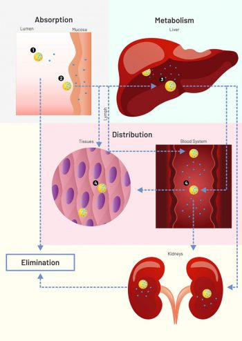
Pharmacokinetics is a subfield of pharmacology that studies how drugs:
- are absorbed by the body,
- distributed,
- metabolised, and
- excreted from the body.
Thinking about the ‘journey’ a drug goes on may be helpful to understand these concepts.
A drug might first enter the body from a variety of routes. Nicotine, for example, could be smoked in a cigarette or taken via a patch applied to the skin. For this module, the effects of nicotine that we are most interested in studying are those happening in the brain. We will review how drugs like nicotine get to the brain.
Finally, you will learn how drugs, as well as their metabolites, can be removed from the body in urine.
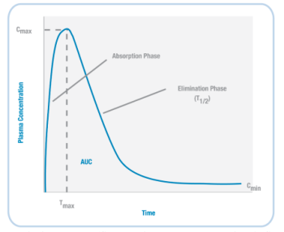
Based on the example timeline shown (left) for nicotine, we can plot the concentration of a drug in the body (Figure 3.37). When a drug is initially administered, the concentration in the body increases (absorption phase). Then, at a particular timepoint (Tmax), the concentration reaches its highest level (Cmax).
Next, during the elimination phase, the concentration of the drug in the body decreases – this happens because the drug is both metabolised and excreted. At some point, the level of the drug decreases so that it is half the value of Cmax; the amount of time it takes to reach this point is the drug’s half-life (T1/2).
Absorption and distribution
Several factors influence how quickly a drug is taken up (absorbed) by the body. Perhaps the most obvious is how the drug is administered. Several non-invasive and invasive methods for drug administration are shown in Table 3.1.
| Non-Invasive Methods of Drug Administration | |
| Oral | Into the mouth |
| Sublingual | Under the tongue |
| Nasal | Absorption through blood capillaries lining nasal cavities |
| Rectal | Like oral, but can be done in unconscious individuals because it doesn’t require swallowing |
| Transdermal | On the skin via a patch |
| Inhalation | Into the lungs, which have a large surface area and are highly vascularised |
| Invasive Methods of Drug Administration | |
| Subcutaneous | Under the skin, but not into the muscle |
| Intramuscular | Into the muscle |
| Intravenous | Directly into the vein, so directly into the body’s bloodstream |
| Epidural | Into the space between the dura mater and vertebrae, used in spinal anaesthesia |
| Injections methods primarily used in animals (e.g., in rodent models of mental health) | |
| Intraperitoneal | Injection into the peritoneal cavity surrounding the intestines |
| Intracranial | Injection into either the tissue of a specific brain region or CSF-filled ventricle; since these drugs are injected into the brain, they do not need to access the body’s circulatory system |
Table 3.1. Routes of administration
With so many injection methods, how is the best method for delivering a drug determined? It turns out that there are many factors influencing that decision. Intravenous (IV) infusions might be the quickest to enter the body, but a drug administered via this route might have the shortest length of action in the body (a short half-life; quickly into and out of the body). So, an IV administration of an analgesic might lead to rapid pain relief, but the effect might not last for long. Plus, some people are afraid of needles, and training is required to administer IV injections. Thus, IV injections do not allow patients to care for themselves independently.
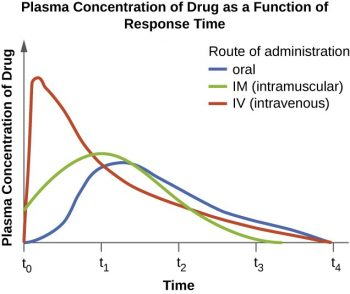
Perhaps on the opposite end of the administration spectrum from IV injections are non-invasive oral administrations. Most individuals can swallow medications, so this method ensures a level of independent care. Unlike IV administration, however, drugs do not immediately enter the bloodstream when taken orally. Therefore, the desired effects of medications swallowed are slower than drugs administered through IV injections.
Further complicating this is that drugs taken by the oral route are absorbed through the gastrointestinal system, and not by the mouth. This has two primary consequences. First, drugs can initially be destroyed by stomach acids, limiting the maximum effect a drug can have (e.g., for a specific medication, Cmax might be higher after IV than after oral administration). Furthermore, the stomach environment is constantly changing (especially after meals!), impacting how much of the drug eventually reaches other parts of the body. Also, after exiting the stomach, drugs enter the liver, where they undergo first-pass metabolism; this can further destroy orally administered medications, reducing the concentration of the drug that reaches the rest of the body. That said, some medications (e.g., lisdexamfetamine) are designed in a certain way so that a person initially swallows an inactive prodrug (Mattingly, 2010). When the prodrug undergoes first-pass metabolism, it is converted into the active drug (the amphetamine) that can later impact brain function.
A few other vital implications of drug administration routes impact how quickly and for how long drugs have their effect. If a drug is administered into an area of the body with a large surface area and a high level of blood circulation (e.g., the lungs), then the drug can enter the bloodstream quicker and be faster at having its desired impact. In contrast, a drug would be much slower to act, and potentially work for a longer duration, if it first needs to cross several cell layers before eventually arriving at a blood vessel (e.g., transdermal delivery). Furthermore, depot binding might occur if drugs become sequestered into inactive sites of the body where there are no receptors for them to bind to (e.g., in fat stores); these fat stores may slowly release a drug or its metabolites, further prolonging their actions on the body.
If not injected via the IV route, drugs can be slow to enter the circulatory system because they first need to pass through various membranes before entering the bloodstream (e.g., stomach wall, capillaries, etc.). While some endogenous compounds have the luxury of helper proteins designed to transport the molecule across the membrane, exogenous drugs usually do not have this mechanism. Instead, drugs most often flow from high areas of concentration to lower regions (via their concentration gradient) and eventually cross membranes they encounter simply through passive diffusion. Since our body’s membranes are made of lipids (a lipid bilayer), the ability of drugs to pass through membranes is determined by their lipid solubility and ionisation.
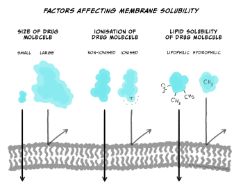
Briefly, most drugs are either weak acids or bases. When a drug is dissolved in a solution, it becomes ionised (charged). The more a drug is ionised, the less lipid-soluble it becomes, decreasing its ability to cross cell membranes. In general, drugs that are acids are less ionised in more acidic solutions, while drugs that are bases are less ionised in more basic solutions. So, for example, the drug aspirin is a weak acid. If aspirin is taken orally in a tablet, it first goes to the stomach. The stomach is strongly acidic (pH 2.0), so aspirin remains primarily in its non-ionised form. Because it is non-ionized and thus lipid-soluble, aspirin can pass through the stomach lining and enter a blood vessel. Blood, however, is slightly basic (pH 7.4); this would result in aspirin becoming ionised, making it less likely to leave the vessel because it’s more challenging to cross membranes (i.e., it’s now less lipid-soluble). The situation where a drug is ‘stuck’ in a compartment because it is highly ionised and low in lipid solubility is called ion trapping (Ellis & Blake, 1993). Concentration gradients can rectify ion trapping; the high concentration in one bodily compartment compared to a neighbouring compartment can encourage the drug to move across membranes to the lower concentration region. Various formulas are used to calculate drug diffusion but are beyond the scope of this module.
Finally, for drugs to enter the brain, as you’ve read about elsewhere, they must first cross the blood-brain barrier (BBB). Drugs that are lipid-soluble can most easily pass through the BBB. So, for example, because heroin is more lipid-soluble than morphine, it can more quickly pass through the BBB and arrive in the brain (Pimentel et al., 2020). Therefore, heroin tends to be faster acting than morphine; this may contribute to its addictive qualities.
Patients use prescribed medications to improve mental health because the drugs impact brain function. However, as described above, delivering drugs directly to the brain is challenging. Because drugs spread across our body via the bloodstream, they act in the periphery before reaching the brain; this can lead to unwanted side effects. Thus, part of the job of a psychopharmacologist is to develop medications that can improve mental well-being via their actions on the brain while minimising undesirable and unwanted effects.
Metabolism and excretion
We have already discussed one way of inactivating drugs: first-pass metabolism in the liver, where microsomal enzymes can break down medications into simpler compounds. Through biotransformation, the liver can metabolise drugs so that they are more ionised; this causes them to lose their lipid solubility, further preventing them from crossing the BBB to enter the brain. Finally, metabolised drugs are primarily excreted by the body via the kidney (urine), but other excretion products include bile, faeces, breath, sweat and saliva.
Special enzymes in both the blood and the brain can also break down drugs. For example, when in the brain, heroin can be metabolised into morphine. This raises an important example – drugs can be metabolised into molecules that are also biologically active. While morphine and heroin might have similar effects, the metabolites of other drugs can have opposing effects. For example, alcohol is metabolised into acetaldehyde via the alcohol dehydrogenase enzyme (Figure 3.39). If acetaldehyde accumulates in the body, it can make a person feel sick. Acetaldehyde itself is metabolised by aldehyde dehydrogenase into acetic acid. There are drugs for alcohol use disorder that block aldehyde dehydrogenase (Disulfiram), thereby resulting in increased levels of acetaldehyde in the body (Veverka et al., 1997). Because the effects of Disulfiram are unpleasant, it is believed that the administration of this drug might prevent people from drinking alcohol in the first place. While this might sound useful, compliance with this treatment is often an issue (Mutschler et al., 2016).
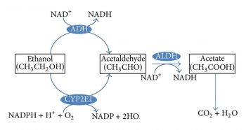
Finally, there is also significant individual variation in metabolism. For example, there might be sex differences in levels of certain enzymes. Women may have lower levels of gastric alcohol dehydrogenase than men – so for a given dose of alcohol, more alcohol enters the bloodstream (Frezza et al., 1990). There is also individual adaptation – chronic drinkers have higher levels of alcohol dehydrogenase. In this example, someone with an alcohol use disorder might need more alcohol than someone else to achieve the desired effects of alcohol – this is an example of tolerance resulting from a state of enzyme induction (increased rate of metabolism due to enhanced expression of genes for drug-metabolising enzymes; tolerance is discussed again later in this chapter). Age also impacts metabolism; older individuals have reduced liver function, and this might lead to exaggerated alcohol effects (Meier & Seitz, 2008). Finally, genetics can impact metabolism as well; some individuals have a polymorphism in the gene encoding aldehyde dehydrogenase – lack of this enzyme means there’s a greater accumulation of acetaldehyde and thus more of its unpleasant effects (Goedde & Agarwal, 1987).
Pharmacodynamics
While pharmacokinetics focuses on how a drug spreads across the body and is eliminated, pharmacodynamics studies the effect a drug has once it reaches its target in the body. So, while pharmacokinetics explains how a drug eventually passes through the BBB to get to the brain, pharmacodynamics describes what type of receptor a drug binds to in the brain and what consequence this has on neuronal signalling. Notably, while this example discusses a drug targeting a receptor, medicines can interact with many different types of molecules in the brain, impacting brain function in numerous ways. The figure below gives a few examples of how a drug can affect synaptic transmission. Once again, it’s crucial to recognise that drugs are acting on cellular mechanisms that already exist to help us survive. For example, nicotine binds to an ionotropic receptor that usually binds the neurotransmitter acetylcholine. This particular receptor also binds nicotine, so we call it the nicotinic acetylcholine receptor.
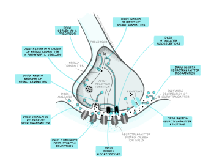
Agonist drugs and dose-response curves
Throughout this and future modules, you will learn about many different types of drugs and their impact on brain biology. For now, we will focus on two general kinds of drugs: agonists and antagonists that bind to receptors. Receptors are molecules that a drug (or an endogenous ligand) bind to and initiate a biological effect. ‘Receptor’ is a very general term – we often think of receptors as proteins that are inserted into the membrane of cells, but this does not have to be the case (receptors can also be in the cytoplasm, for example). Some examples of where receptors can be located are shown in Figure 3.41. For example, receptors can be found on post-synaptic neurons (e.g., nicotinic acetylcholine receptors) and on pre-synaptic terminals (known as autoreceptors, which help self-regulate neurotransmitter release; e.g., the dopamine D3-type receptor). Drugs are often not limited to binding one particular receptor – they are often considered ‘dirty’, binding to multiple types of receptors to varying degrees across the body. This is one reason why drugs often have unwanted side effects. Second generation antipsychotic medications are notorious for impacting multiple types of receptors, and this may be why there is significant individual variation in their tolerability (Kishimoto et al., 2019).
Drugs that are considered agonists can bind to a receptor and initiate some type of biological effect, such as turning on an intracellular cascade of signalling events. Because of this, we often think of agonists as working via a ‘lock-and-key’ mechanism – inserting a drug into a receptor enables events to occur (see Figure 3.45, top). It is critical to recognise that drugs tend to bind to receptors weakly and can rapidly dissociate from the receptor. Therefore, the acute impact drugs have is reversible. This is important because when a drug is no longer bound to a receptor, the endogenous ligand for that receptor can once again bind.
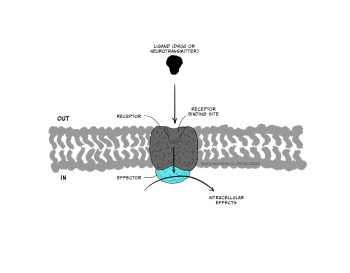
How much biological impact a drug has on the brain is, in part, dependent upon the number of receptors that are available to bind the drug. Therefore, increasing the number of drug molecules in the brain will also increase the probability of binding to a receptor. While larger doses of a drug can have a more significant impact on biology, there is always a limit. The maximum effect of a drug is achieved when the drug is continuously bound to all receptors; that is, a drug reaches its maximal effect when all receptors are occupied – this is known as the law of mass action and can be described by a dose-response curve.
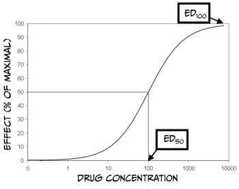
As you can see from Figure 3.43 above, dose-response curves have a typical S-shape. They are usually plotted with a logarithmic function of ‘dose’ of drug administered on the x-axis and a measured response on the y-axis. Looking at the figure, you can see that at some point, increasing the dose of the drug no longer produces a bigger response; at this point (known as effective dose 100, ED100), the drug is occupying all of the available receptors and therefore is having its maximum effect. Another important point on the graph is the ED50 for the drug. ED50 is a drug-potency measure representing the dose that produces half of the maximal effect. Alternatively, ED50 can characterise the amount of a drug that produces an effect in half of the population to which it was administered. Finally, it is also crucial to remember that most medications have various effects on the body and can even interact with multiple receptors. Binding to Receptor A might impact pain perception, while binding to Receptor B might impact blood pressure. If Receptor B is more prevalent than Receptor A, then the dose required to affect blood pressure maximally would be higher than that to alter pain perception. Accordingly, there would also be a different ED50 value for each response.
Drugs often have side effects that are either undesirable or dangerous; dose-response curves can also be used to characterise these effects. For example, one unwanted effect of a drug is sedation. The dose of the medicine that produces this effect in 50% of subjects is referred to as the toxic dose 50 (TD50). Using this information, doctors can calculate a margin of safety, known as the therapeutic index (or therapeutic window) (TI = TD50 / ED50), which indicates how much the dose of a drug may be raised safely. Just as drugs might have multiple desirable effects, there may also be numerous toxic effects, each with a different TD50. Finally, in the therapeutic index formula, TD50 can be substituted with the lethal dose 50 (LD50), which is the dose of a drug that can kill 50% of subjects.
Comparing dose-response curves of agonist drugs
Up until now, we have primarily discussed the efficacy of drugs: the maximum effect they can produce. Drugs also differ in potency: how much medication is needed to produce an effect. Figure 3.43 shows dose-response curves for three opioid drugs with similar efficacies; hydromorphine, morphine, and codeine can all effectively reduce pain. However, different doses of these drugs are required to relieve pain – a higher concentration of codeine is needed for pain relief than morphine. Because of this, the ED50 of each of these drugs are also different. Drugs with a lower ED50 are considered more potent than drugs with a higher ED50.
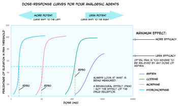
The figure also displays the dose-response curve for aspirin, a non-opioid drug that can be used to reduce pain. Not only is a higher dose of aspirin required to reach similar levels of pain relief compared to opioids like morphine, but pain can also not be entirely relieved by any dose of aspirin. So, aspirin is both less potent and less efficacious for relieving pain than morphine.
There are likely several reasons for these differences in potency between drugs. For example, the pharmacokinetics are likely different between medications; if one drug has an enhanced ability to cross the BBB, then more molecules of that drug will bind receptors, and that drug will have supreme efficacy. In addition, some drugs might have a greater affinity for receptors than other drugs; a drug with higher affinity will likely stay bound to the receptor for a more extended period and thus keep on having an effect. Differences in the efficacy of drugs likely signify that those medications work through different mechanisms. While both morphine and aspirin relieve pain, morphine works by binding opioid receptors, and aspirin instead inactivates the cyclooxygenase enzyme.
Antagonist drugs
Agonist drugs binding to receptors can cause a biological response – as such, they are said to have intrinsic activity. In contrast, antagonists bind to receptors and counteract either an agonist or endogenous ligand’s effect on a receptor. Therefore, one can measure the effectiveness of an antagonist by observing how its administration impacts the dose-response curves of agonist drugs. Unlike agonist drugs that follow a ‘lock and key’ mechanism to initiate biological effects (Figure 3.45, top row), it may be helpful to imagine an antagonist as a key that fits into a lock but does not turn (Figure 3.45, bottom row).
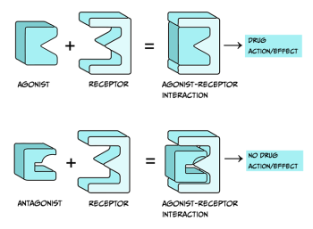
There are a couple of categories of antagonists that you should be familiar with (Figure 3.46). Competitive antagonists bind to the same site on a receptor as an agonist or endogenous ligand. Because of this, this type of antagonist competes with the endogenous ligand for available binding sites. Therefore, a higher dose of the agonist drug would need to be administered to outcompete the presence of an antagonist; this would shift the ED50 of the agonist dose-response curve to the right. Theoretically, if there is so much agonist that absolutely no antagonist molecules can bind to a receptor, and if the agonist occupies all available receptors, then the agonist can reach the same ED100 as in the absence of an antagonist.
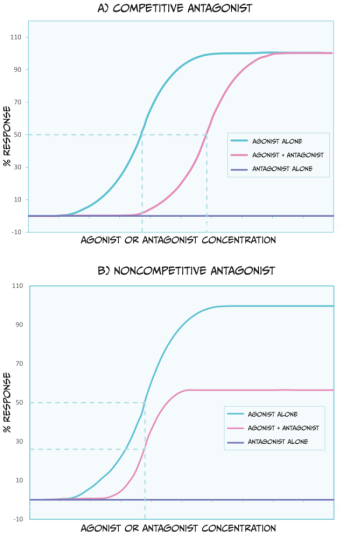
Unlike competitive antagonists, non-competitive agonists bind to a different part of a receptor than an agonist or endogenous ligand; therefore, they do not compete for binding. In effect, non-competitive antagonists make receptors unavailable for agonist drug action. While non-competitive antagonists still shift the dose-response curves of agonists to the right (Figure 3.46 B), they can also decrease the maximum possible effect an agonist or endogenous ligand has (i.e., they reduce the ED100). Because non-competitive antagonists bind to different receptor sites as agonist drugs, simply increasing the dose of an agonist cannot overcome this blockade.
When discussing agonists, we mentioned that most drugs form weak bonds with receptors. This means that the effects of the drug are reversible because the drug can easily dissociate from a receptor. Most antagonist drugs work similarly, and their interaction with receptors is temporary. However, the effects of some antagonist drugs are irreversible – they form a long-lasting bond with receptors. One example of such an antagonist is alpha-bungarotoxin (from banded krait venom), which blocks acetylcholine receptors at neuromuscular junctions. This can result in paralysis, respiratory failure, and death. However, there is a hypothetical scenario to overcome the effects of irreversible antagonists – synthesising new receptors. Suppose enough new receptors are formed and become functional, and the irreversible antagonist is no longer in the system (e.g., it has been eliminated via urine). In that case, these new receptors can begin to restore biological function (when they bind agonists or endogenous ligands).
Other types of agonists
There are three other types of ‘agonist’ drugs you may encounter in your studies. First, indirect agonists (or allosteric modulators) can bind to a different receptor part than a (regular) full agonist or endogenous ligand. These indirect agonists help full agonists, or endogenous ligands, have their full effects. Benzodiazepines are an example of an indirect agonist because they bind to GABAA receptors, and they enhance the channel’s conductance when GABA (the endogenous ligand) is also attached.
Second, partial agonists bind to the same receptor site as agonist drugs, but they have low efficacy (Figure 3.47). Therefore, defining a drug as a partial agonist is relative – the response to a partial agonist must be less than the maximum response produced by a full agonist. Importantly, when both full and partial agonists are administered simultaneously, they compete for the same receptor binding site. In this scenario, because the partial agonist is less effective at producing a biological response, it antagonises the effect of the full agonist. In other words, it is impossible for the body to produce a full response to the agonist because partial agonists (which are less efficacious) occupy the agonist-binding sites. Such an effect can be overcome by increasing the dose of a full agonist, allowing it to outcompete the partial agonist for binding to receptor sites. Because of these effects, partial agonists are sometimes called mixed agonist-antagonist drugs.
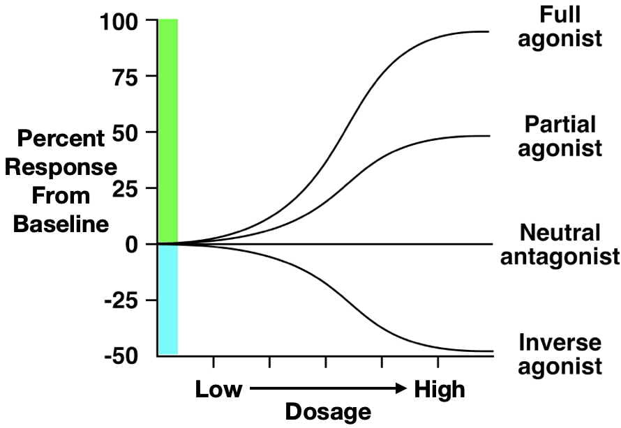
The final type of drug we will discuss is the inverse agonist. Some receptors in the body have substantial endogenous activity, even when ligands are not bound to them. This observation breaks the general rule that receptors have no activity when they are not bound to a ligand. Inverse agonists reduce this spontaneous activity, resulting in a descending dose-response curve (Figure 3.47). Although their mechanism is complex, some beta-carboline alkaloids are considered inverse agonists. Beta-carboline alkaloids bind to GABAA receptors at the same site as benzodiazepines. While benzodiazepines facilitate chloride conductance through the receptor channel and decrease anxiety, beta-carboline alkaloids have the opposite effects when administered (Evans & Lowry, 2007). The anxiety-inducing effects of these inverse agonists lead some people to call them ‘anti-benzodiazepines’. By contrast, drugs that are competitive antagonists at the GABAA receptor do not influence the receptor’s function on their own, but instead block the ability of full, partial, or inverse agonists to alter the receptor’s activity.
Effects of repeated drug use
If an individual is repeatedly administered a specific dose of an agonist drug, then the ability of the drug to exert effects on the body might change. If the drug effects get smaller, this is known as tolerance. So, if an individual has developed tolerance to a particular drug, then the dose of the drug might need to be increased so that the drug is still efficacious. Sometimes, drug effects get bigger and bigger with repeated administrations – this finding is known as sensitisation or reverse-tolerance. Because drugs can have multiple effects on the nervous system and behaviour, some drug responses may undergo tolerance, while others are sensitised. For example, repeated administration of amphetamine can result in tolerance to the euphoria-inducing effects of the drug, but sensitisation to specific psychomotor or psychosis-associated impacts.
Exercise
To help you think about these concepts, try drawing dose-response curves for the development of tolerance and sensitisation. Remember that, with tolerance, more drug is required to get the same effect. In contrast, with sensitisation less drug is needed to get the same effect.
Because certain drugs target similar receptors in the nervous system, sometimes cross-tolerance happens, where one drug also reduces the effects of another drug. For example, alcohol drinkers might be less affected by benzodiazepines since the impact of both types of drugs are dependent upon GABA transmission and the expression of GABA receptors (Lê et al., 1986). Mechanisms underlying drug sensitisation might be a bit less studied than tolerance. One example, however, of sensitisation is the ability of certain drugs (like amphetamine) to increase levels of the neurotransmitter dopamine across administrations (Singer et al., 2009). You will learn more about drug tolerance and sensitisation when studying addiction.
Summary
Key Takeaways
- Multiple classification systems for drugs exist
- Pharmacokinetics involves the absorption, distribution, and elimination of drugs from the body
- Pharmacodynamics involves how drugs interact with receptors and alter the functional state of the receptor.
In this chapter, you have learned about different categories of drugs and how they impact the body through pharmacokinetic and pharmacodynamic processes (Figure 3.48). Entire modules are often devoted to pharmacology, and many of the concepts we described can be further quantified via mathematical formulas, allowing for precise drug comparisons. As you study different psychiatric conditions and their biomedical treatments, be sure to refer to this chapter to help you understand how medications can be used for many individuals to improve mental wellbeing.
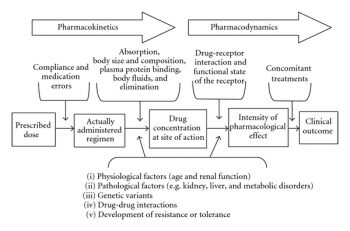
References
Corder, G., Castro, D. C., Bruchas, M. R., & Scherrer, G. (2018). Endogenous and exogenous opioids in pain. Annual Reviews of Neuroscience, 41, 453–473. https://dx.doi.org/10.1146/annurev-neuro-080317-061522.
Ellis, G. A., & Blake, D. R. (1993). Why are non-steroidal anti-inflammatory drugs so variable in their efficacy? A description of ion trapping. Annals of the Rheumatic Diseases, 52, 241–243. https://dx.doi.org/10.1136/ard.52.3.241.
Evans, A. K., & Lowry, C. A. (2007). Pharmacology of the beta-carboline FG-7,142, a partial inverse agonist at the benzodiazepine allosteric site of the GABA A receptor: neurochemical, neurophysiological, and behavioral effects. CNS Drug Reviews, 13(4), 475–501. https://doi.org/10.1111/j.1527-3458.2007.00025.x
Frezza, M., di Padova, C., Pozzato, G., Terpin, M., Baraona, E., & Lieber, C. S. (1990). High blood alcohol levels in women. The role of decreased gastric alcohol dehydrogenase activity and first-pass metabolism. The New England Journal of Medicine, 322(2), 95–99. https://doi.org/10.1056/NEJM199001113220205
Goedde, H. W., & Agarwal, D. P. (1987). Polymorphism of aldehyde dehydrogenase and alcohol sensitivity. Enzyme, 37(1–2), 29–44. https://doi.org/10.1159/000469239
Kishimoto, T., Hagi, K., Nitta, M., Kane, J. M., & Correll, C. U. (2019). Long-term effectiveness of oral second-generation antipsychotics in patients with schizophrenia and related disorders: a systematic review and meta-analysis of direct head-to-head comparisons. World Psychiatry, 18(2), 208-224. https://doi.org/10.1002/wps.20632
Lê, A. D., Khanna, J. M., Kalant, H., & Grossi, F. (1986). Tolerance to and cross-tolerance among ethanol, pentobarbital and chlordiazepoxide. Pharmacology, Biochemistry, and Behavior, 24(1), 93–98. https://doi.org/10.1016/0091-3057(86)90050-x
Le Merrer, J., Becker, J. A. J., Befort, K., & Kieffer, B. L. (2009). Reward processing by the opioid system in the brain. Physiological Reviews, 89, 1379–1412. https://dx.doi.org/10.1152/physrev.00005.2009.
Mattingly, G. (2010). Lisdexamfetamine dimesylate: a prodrug stimulant for the treatment of ADHD in children and adults. CNS Spectrums, 15, 315–325. https://dx.doi.org/10.1017/S1092852900027541.
Meier, P., & Seitz, H. K., (2008). Age, alcohol metabolism and liver disease. Current Opinion in Clinical Nutrition and Metabolic Care, 11(1), 21-26. https:/doi.org/10.1097/MCO.0b013e3282f30564.
Mutschler, J., Grosshans, M., Soyka, M., & Rösner, S. (2016). Current findings and mechanisms of action of disulfiram in the treatment of alcohol dependence. Pharmacopsychiatry, 49(4), 137–141. https://doi.org/10.1055/s-0042-103592
Nichols, D. E. (2022). Entactogens: How the name for a novel class of psychoactive agents originated. Frontiers in Psychiatry, 13, 863088. https://dx.doi.org/10.3389/fpsyt.2022.863088.
Pimentel, E., Sivalingam, K., Doke, M., & Samikkannu, T. (2020). Effects of drugs of abuse on the blood-brain barrier: A brief overview. Frontiers in Neuroscience 14, 513. https://dx.doi.org/10.3389/fnins.2020.00513.
Singer, B. F., Tanabe, L. M., Gorny, G., Jake-Matthews, C., Li, Y., Kolb, B., & Vezina, P. (2009). Amphetamine-induced changes in dendritic morphology in rat forebrain correspond to associative drug conditioning rather than nonassociative drug sensitization. Biological Psychiatry, 65(10), 835–840. https://doi.org/10.1016/j.biopsych.2008.12.020
UK Government (2022). List of most commonly encountered drugs currently controlled under the misuse of drugs legislation. (Accessed 13 Dec 2022). https://www.gov.uk/government/publications/controlled-drugs-list–2/list-of-most-commonly-encountered-drugs-currently-controlled-under-the-misuse-of-drugs-legislation
Veverka, K. A., Johnson, K. L., Mays, D. C., Lipsky, J. J., & Naylor, S. (1997). Inhibition of aldehyde dehydrogenase by disulfiram and its metabolite methyl diethylthiocarbamoyl-sulfoxide. Biochemical Pharmacology, 53, 511–518. https://doi.org/10.1016/S0006-2952(96)00767-8
A drug is defined as a substance that can bring about physiological or psychological change in an individual by acting on biological processes.
The study of how drugs impact the brain and behaviour.